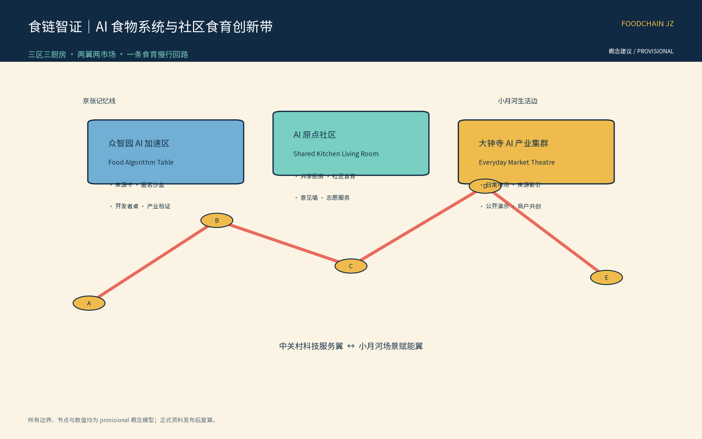
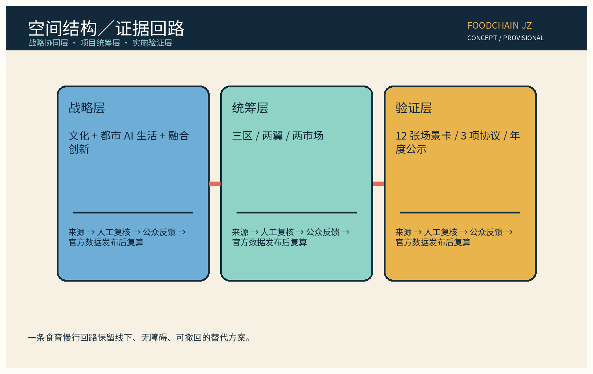
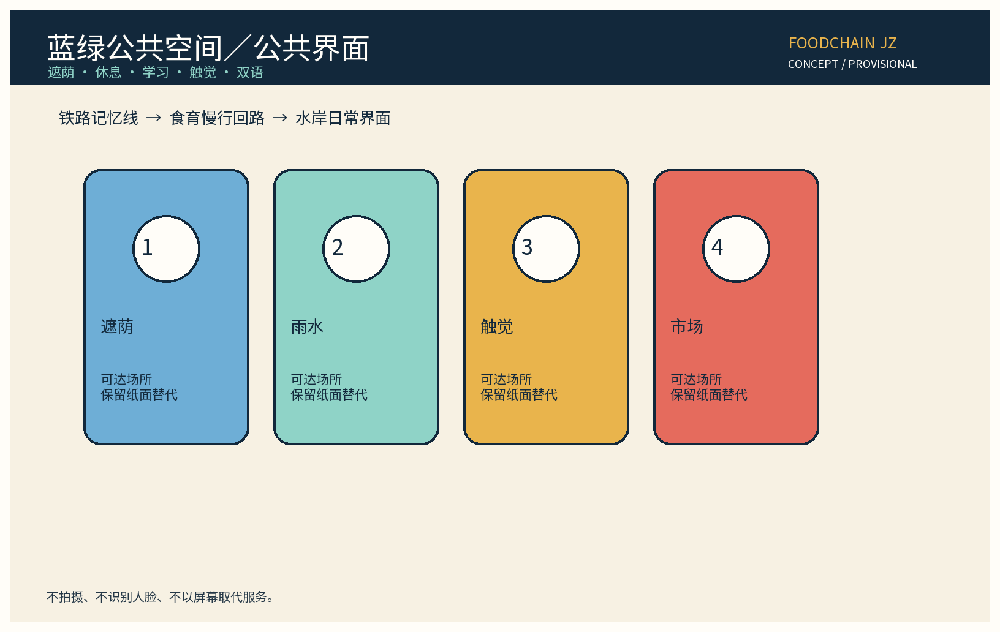

总览地图
以食物系统连接百年京张文化带、都市 AI 生活体验带与 AI 融合创新带：生产信息、共享厨房、社区市场、食育活动、冷链交接候选与余量自愿再分配被看见、被人工复核、可退出。

三层范围
SITE-001 为概念研究包边界；KEY-ZHON / KEY-BEIJ / KEY-DAZH 为三个重点区；GeoJSON 均为 official_boundary=false，不代表红线、权属、选址或控制指标。
重点区域
A｜众智园 AI 加速区
Food Algorithm Table、来源卡、匿名沙盒、开发者桌。
Food Algorithm Table、来源卡、匿名沙盒、开发者桌。
B｜AI 原点社区
Shared Kitchen Living Room、社区食育与意见墙。
Shared Kitchen Living Room、社区食育与意见墙。
C｜大钟寺 AI 产业集群
Everyday Market Theatre、来源索引与公开演示。
Everyday Market Theatre、来源索引与公开演示。
交通慢行
步行优先、骑行停放、清晰公交指引、可达绕行、休息点、天气替代和人工服务台；市政接口须专业深化，不作工程结论。

用地分区

蓝绿公共空间

AI 场景
输入：自愿最小化资料模型：分类/检索/建议人工复核：居民+专业角色输出：卡片/导视/候选清单责任：运营方签发指标：unknown 基线退出：撤回/回滚/停用
谷粒公约：仅匿名聚合；关键决策人工复核；禁止过度监控。
核心指标
11,412,825.386 m²研究包面积
0.110044绿地率
0.003167公共空间率
FAR、建筑高度、权属、许可和正式边界为 unknown/to_verify。
更新项目
近期 1—3 年启动食育回路与影子测试；中期 3—5 年缝合节点；远期 5—10 年深化生态与公共运营。每阶段经过资料齐备、人工复核、公众意见和 go/no-go。
任务覆盖
| 任务 | 落实证据 |
|---|---|
| agent.1 | 命名、Logo、三定位、五功能、三区两翼、总览地图。 |
| agent.2 | 6 个可追溯案例、生态网络、8 要素机制。 |
| agent.3 | 12 张场景卡、3 项协议、7 类画像、人工复核。 |
| agent.4 | 公共空间缝合、智能原生市场、3 地标、组件库。 |
| agent.5 | 京张叙事、食物时间线、双语导视与国际传播。 |
| agent.6 | 年度活动、开发者运营、阶段门、公开日与转换。 |
自检状态
最新结果见 self_check.json 与 manifest；本地检查不等于 CocoSgt 官评。
假设
官方边界、权属、许可、运营基线和品牌授权均为 unknown/to_verify，须经专业深化。